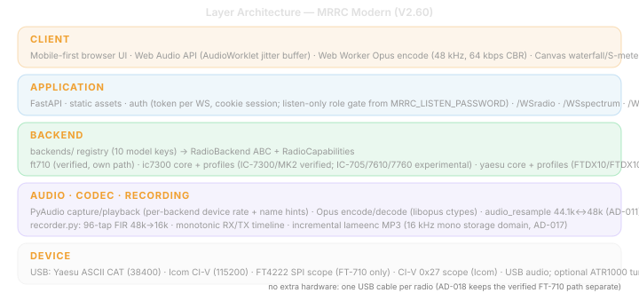

1. Executive Summary
1.1 Project Overview
MRRC Modern (mrrc_modern) is a mobile-first browser remote-control system for supported HF/50MHz transceivers — currently the Yaesu FT-710 and the Icom IC-7300 / IC-7300MK2. It provides a single web UI, WebSocket control/audio/spectrum channels, a pluggable radio-backend layer, spectrum data capture, PyAudio sound card audio streaming, Opus codec compression, and real-time waterfall/S-meter/multi-meter visualization.
The codebase is a standalone Python FastAPI/Uvicorn service. It does not depend on wfview, Hamlib, or any external radio middleware. The backend is selected at startup by MRRC_RADIO_MODEL (ft710, ic7300, or ic7300mk2; default ft710). Each backend talks directly to its radio: the FT-710 backend sends Yaesu ASCII CAT over a serial port and reads FT4222 SPI scope data via a subprocess; the IC-7300 backend sends Icom CI-V frames over USB serial and demuxes in-band 0x27 spectrum on the same port. RX/TX audio is captured/played through the radio’s built-in USB audio interface via PyAudio.
1.2 Current Design Goals
| Goal | Target | Current Evidence |
|---|---|---|
| Mobile-first operation | iPhone/mobile browser as primary UI | static/index.html, ft710.css, ft710_main.js, ft710_ui.js |
| Full radio control | All essential radio commands via WebSocket | backends/ft710/cat_controller.py, backends/ic7300/civ_controller.py |
| Real-time spectrum | Waterfall from real scope data or S-meter fallback | backends/ft710/scope_pipe.py, backends/ic7300/civ_scope.py, scope_handler.py |
| Bidirectional audio | RX audio from radio to browser; TX audio from browser to radio | audio_handler.py, /WSaudioRX, /WSaudioTX |
| Safe PTT handling | Multiple layered safeguards against stuck TX | ptt_manager.js watchdog, dead-man switch, unload beacon |
| Minimal deployment | Single Python process serves UI, WS, audio, scope, radio bridge | server.py FastAPI lifespan |
1.3 Implemented Core Features
| Feature | Status | Description |
|---|---|---|
| Mobile PWA-style UI | Implemented | Safe-area support, manifest, service worker, dark amber theme |
| Control WebSocket | Implemented | /WSradio JSON: fullState, stateUpdate, set/get commands, auth |
| RX audio WebSocket | Implemented | /WSaudioRX tagged dual-codec frames (0x00=PCM, 0x01=Opus 48kHz mono) |
| TX audio WebSocket | Implemented | /WSaudioTX tagged mic frames → Opus decode → PyAudio → radio |
| Spectrum WebSocket | Implemented | /WSspectrum binary: v1=851B wf1, v2=1701B wf1+wf2, ~30fps |
| Spectrum dual-mode | Implemented | Real FFT data (FT4222 SPI for FT-710, CI-V 0x27 for IC-7300) + S-meter fallback (synthetic Gaussian peaks) |
| Serial radio protocol | Implemented | FT-710: Yaesu ASCII CAT via pyserial; IC-7300: CI-V framing via civ_codec.py/civ_controller.py |
| 7-task polling | Implemented | 100ms–5s adaptive polling (7 asyncio tasks) with skip-on-command |
| S-meter + Multi-meter | Implemented | Canvas S-meter bar + PWR/ALC/SWR/Id/Vd horizontal bar meters |
| Memory channels | Implemented | /api/mem_channels GET/POST with mem_channels.json persistence |
| Session auth | Implemented | Password login, mrrc_auth cookie (30-day), ?token= on WebSocket |
| PTT safety | Implemented | Touch-and-hold TX; PTT watchdog; dead-man switch; unload beacon |
1.4 Architecture Layers

1.5 Current Project Status
As of 2026-08-17, the full control + spectrum + audio pipeline is implemented for both the FT-710 and IC-7300/MK2 backends. RX audio is captured from the selected radio’s USB audio interface via PyAudio, encoded with Opus (48kHz mono), and streamed to the browser via /WSaudioRX. TX audio is captured from the browser microphone, encoded with Opus (or PCM fallback), decoded server-side, and played to the radio via PyAudio output; the FT-710 bridges the 48kHz codec domain to the radio’s native 44.1kHz USB audio, while the IC-7300 uses 48kHz native USB audio with no resample. PTT triggers TX audio stream start/stop. Spectrum comes from the FT4222 SPI chip (FT-710) or CI-V 0x27 frames (IC-7300) when available, with automatic S-meter fallback. All radio controls (frequency, mode, filter, gains, PTT, NR/NB/AN, compressor, ATU, scope settings) are available through the WebSocket JSON API, with the frontend adapting to the active backend’s capabilities in fullState.